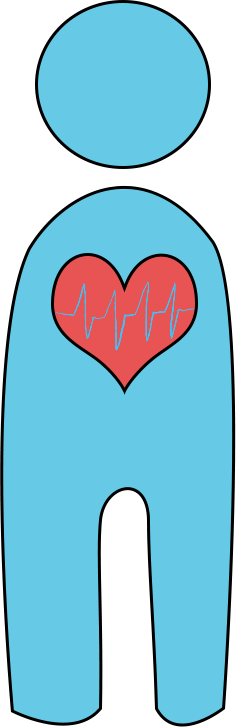

When did COVID-19 first start?
While the World Health Organization (WHO) officially declared COVID-19 to be a pandemic during March 2020, the first cases of COVID-19 is speculated to have started months before in Wuhan, Hubei, China.
The name COVID-19 stands for “CO = corona”, “VI-virus”, “D= disease”, and “19 = 2019”.
Throughout the year of 2020, more and more cases of the novel virus have emerged and spread across the world.
As of now, every single country and continent (including Antarctica) in the world has seen a case of COVID-19.
However, thanks to the development of vaccines, strict quarantine mandates, and intense public health movements, COVID-19 cases will hopefully drop over time in the near future.
What is COVID-19?

COVID-19 is a coronavirus which is a type of virus known for an outer, spiky layer (also known as a corona or “crown”).
It can spread through the air via tiny droplets or through direct contact.
The virus attacks the respiratory system by infecting the lungs, cause their cells to rapidly deteriorate.
Symptoms
- Dry coughing
- Fever or chills
- Difficulty breathing
- Loss of smell and/or taste
- Muscle or body aches
- Sore throat
- Fatigue
- Nausea and/or vomiting
- Diarrhea
- Congestion or runny nose
Who is most vulnerable?
- Anyone 60 or older?
- People with pre-diagnosed conditions such as
- Lung or Heart disease
- Diabetes
- Immunocompromised state (those who immune system is affected)
- Sickle Cell Disease
- Anyone who is consiered to be obese
- Pregnant women
- Smokers
How do I protect myself?

- Wear masks that cover both your nose and mouth.
- If not, face shields that protect the whole face can work.
- Wash hands frequently with warm water and soap for 20 seconds.
- Avoid close contact with someone who has been infected.
- Keep a distance of 6ft. apart.
What is a quarantine?
A quarantine is a period of time when someone has to isolate themselves by isolating themselves from others. This is a protective measure so that anyone who is suspected of either being infected, contacted someone who was infected, or is at risk of being infected can keep others and themselves safe. At this time, only essential travel is recommended which generally means this:
Essential Travel
- Stores to buy food, medicine, or necessary items.
- Pharmacies
- Work
- Economic Services
- Medical Care and Services
How is this different from a lockdown? Isolation?
While all three terms are usually used interchangeably, generally it boils down to technicalities. A lockdown is generally used to refer to a situation in which an active threat is subdued by isolating potential victims away from the threat. Isolation, just like quarantine, is when you separate individuals from the general population to prevent the spread of a virus or any other threat in general.
Were there past pandemics?
In the past, there have been many instances where pandemics have completed annihilated entire populations and affected human history. Listed here are a few epidemics that are notable due to how they influenced recorded human history.
Ancient Pandemics
There are pandemics recorded as early as the Bronze Age when it is believed than an earlier iteration of a bacteria-based plague appeared.
But the earliest recorded instance of a plague took place in 430 B.C. in Athens during the Peloponnesian War. When the Spartans laid siege to the city, it spread from the Spartan Army across the walls to the city where 2/3 of the population died. Sickened and devastated, the city fell as its people perished from what was speculated to be typhoid fever.
In 541 A.D., the Justinian Plague would spread across empires across Egypt and throughout the Mediterranean. Thanks to the massive devastation wrought by the plague, Emperor Justinian was left with a broken Roman Empire and 50 million people dead within his reign. It is also believed that this might have been the first emergence of the bacteria that would become the Black Plague.
These are only two of the most prominent examples of how powerful epidemics would be as not only would they cause so much death but also break empires and worsen wars. But as noted through these examples, past epidemics usually came in cycles as one version of the virus/bacteria would rise, fall, then return in a different form.
Medieval Times
The most famous epidemic of all is the Black Plague, a devastating disaster caused by a strain of bacteria called Yersinia pestis. Carried by infected fleas infesting rats, it is characterized by the appearance of black, pus-filled sores called buboes that were present on the victims’ body. The Black Plague manifested during the 14th Century and devastated 1/3 of Europe. Kingdoms were ended and even the mightiest of scourges were forced to cease ambitious expeditions of conquer such as when the Vikings were forced to halt any further exploration of North America.
In 1492, the arrival of Spanish explorers in the Caribbean and Americas would bring novel diseases to the New World. Within a brief period of time, entire empires of indigenous peoples such as the Aztec and the Taino would be infected and killed by the influx of diseases such as smallpox, measles, and bubonic plague.
In 1817, the first of seven Cholera pandemics would emerge across the world, beginning in Russia where the bacterium claimed one million people. This bacterium would spread across the world to Spain, Africa, Indonesia, China, Japan, Italy, Germany, India, and America. In 1885, a vaccine was created though the cholera outbreaks would continue even in present day.
1900s
At around the end of World War I, the 1918 flu descended upon Europe and spread quickly to the Americas and parts of Asia. Because so many countries were either still embroiled in civil conflict or recovering from the Great War, the flu spread rapidly. Though there was no known cure (vaccine or antibiotics) for the flu, countries had to resort to defensive, protective measures ranging from limited social gatherings, isolation, disinfectants, and personal hygiene.
The HIV/AIDS epidemic first emerged in the 1980s where 121 infected individuals died within a year of the initial diagnosis. Since then, it has continued to devastate hundreds of thousands of people all over the world. While there is currently no known cure for AIDS, there have been some promising treatments that have effectively strengthened the immunocompromised states of those who have been infected. Sadly enough, unlike the past epidemics, HIV/AIDS is still ongoing though having an access to better treatment, educational resources freely available to all, and advancing medical research can still help prevent and protect oneself from infections.
2000s to the present day
Before the rise of COVID-19, there were many other viral mass infections that affected the world. Beginning with the SARS virus of 2003, it first appeared in Asia when it manifested as respiratory symptoms. While quarantine efforts were proven to be highly effective, the virus spread to 26 countries. The rise of this virus led to an international call for greater research into disease control and treatment on a grand-scale in order to prevent any future epidemics from rising out of hand.
As you can see now, here we are in the 2020s facing a new decade with a novel virus that, despite the devastation, has provided us with a new set of data from which we build a better understanding of microbiology, virology, and even the components of our mRNA. Who knows what the future will bring but, as history has shown, humanity can be quite resilient in the face of desolation.